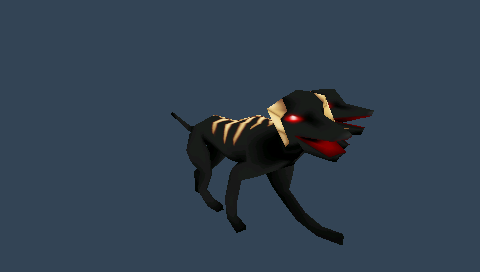
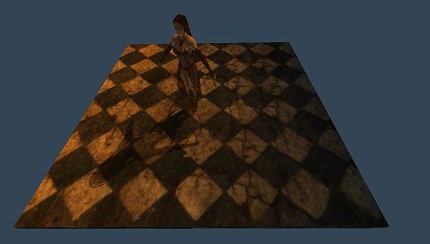
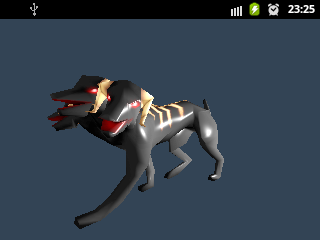
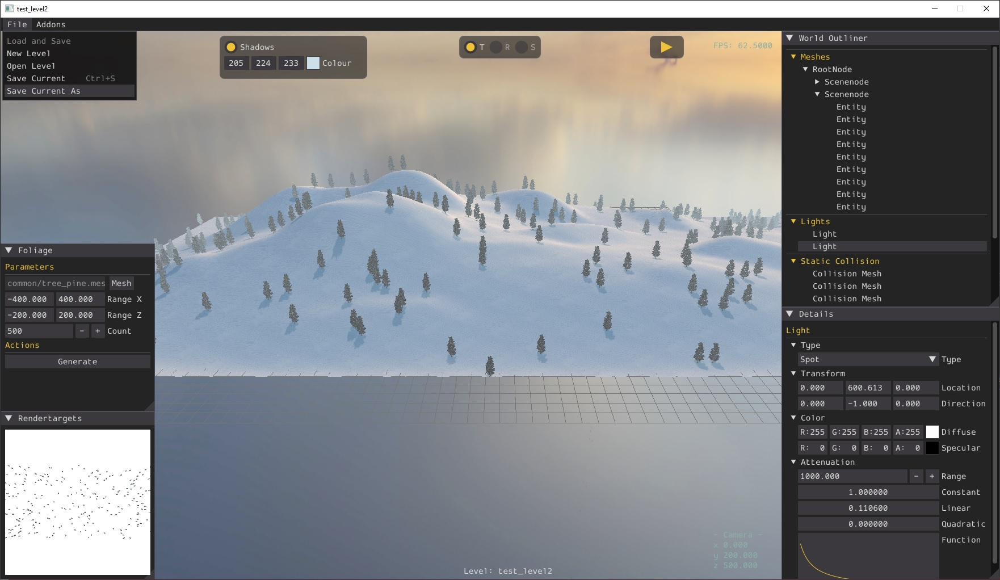

Overview
ChrisslyEngine is a 3D-Rendering/Audio Engine for the Playstation Portable (PSP), Android devices and Windows written in C++.
Screenshots
Playstation Portable
 
Android

Features
Platform Support
- Playstation Portable
- Android
- Windows
Audio
- channel management
- buffered and streamed playback
- 3d sound (built-in software implementation wich works with all devices/drivers that support at least stereo output, linear clamped roll-off)
- File Format Support
- RIFF WAVE (*.wav)
- Ogg Vorbis (*.ogg)
- real-time dsp system
Graphics
- Materials
- C-like syntax material description language that exposes common fixed function operations with support for multi-pass rendering
- Shader parameters can be modified in the application using a simple highlevel interface
- Animation
- Skeletal animation with support for weighted blending of multiple animations
- Morph animation (linear blends between shape snapshots)
- Texture-based shadows
Tools
- Blender Add-on
- Export to ChrisslyEngine-Mesh (.mesh), ChrisslyEngine-Texture (.tex), ChrisslyEngine-Materialdescription (.material) and ChrisslyEngine-Skeleton (.skeleton) directly from Blender
- Command line tools
- meshtool: Converts Wavefront-ASCII-OBJ (.obj) to ChrisslyEngine-Mesh (.mesh), creating a morphanimation from a series of (*.obj) files is also supported
- texturetool: Adds ChrisslyEngine texture header to raw texture data
Quickstart
Download
Download repository as zip here or clone it with the following command:
git clone https://bitbucket.org/evolver/chrisslyengine.git
Building, and running the windows sample
Building the sample
- install Visual Studio 2015 or higher
- open 'windows/ChrisslyEngine_Windows.sln', right click 'ChrisslyEngine_Windows' in the project explorer and click 'Build'
- run 'windows/exportassets.cmd'
Running the sample
- press 'F5' in Visual Studio to start/debug the sample application
Building, and running the psp sample
Building the sample
- install devkitPSP
- open a commandline, goto 'chrisslyengine\psp' and run 'make' or open 'ChrisslyEngine_PSP.pnproj' and press 'ALT + 1'
- run 'psp\exportassets.cmd'
Running the sample on a real PSP
- create a new folder 'ms0:/PSP/GAME/ChrisslyEngine_PSP'
- copy the 'export' folder and the 'EBOOT.PBP' to the new folder
- use Half-Byte Loader to execute, since the PBP is not signed
Running the sample on the JPCSP emulator
- copy the 'export' folder to 'jpcsp\ms0\PSP\GAME\ChrisslyEngine_PSP'
- open JPCSP, then load the EBOOT.PBP with 'Load File' and press 'Run'
Running the sample on the PPSSPP emulator
- copy the 'export' folder to 'ppsspp_win\memstick\PSP\GAME\ChrisslyEngine_PSP'
- open PPSSPP, then load the EBOOT.PBP with 'File' -> 'Open'
Building, and running the android sample
Building the sample
- edit 'android\ChrisslyEngine_Android\build.cmd'
- change 'NDK' variable to point to your NDK installation directory
- run 'build.cmd'
- run 'exportassets.cmd'
Running the sample with Eclipse and the Android Development Tool (ADT)
- install eclipse and adt as described here
- open eclipse
- 'File' -> 'Import' -> 'Existing Projects into Workspace'
- select 'android\ChrisslyEngine_Android' and click 'Finish'
- right click the application in the project explorer 'Run As' -> '1 Android Application'
Toolchain
Internal and external tools used for working with the engine.
Blender
Install Addon
- copy 'tools/blender/io_export_chrisslymesh.py' to 'C:\Program Files\Blender Foundation\Blender 3.1\3.1\scripts\addons'
- in Blender go to 'Edit -> Preferences -> Add-ons' and check 'Import-Export ChrisslyEngine-Mesh format(.mesh)'
Export directly to (.mesh), (.material), (.skeleton) and (.tex) using the addon
- textures will be exported in R8G8B8A8 format
- axis_conversion(to_forward='-Z', to_up='+Y') on static meshes and morph animations, but not on skeletal animations
- modifiers are not applied (to apply: 'Object Mode -> Object -> Apply -> All Transforms')
- for a custom gpu program:
- select material
- 'Custom Properties -> New'
- name the new property 'gpu_program' and select 'String' as type
- set value (like "skybox.fx")
- after export your (.material) file will contain a line 'gpu_program "skybox.fx"' in the pass section
Export to "obj" for later conversion with the mesh cl tool
Options blender "obj" exporter for animations:
- 'Animations'
- 'Triangulate'
Skeletal Animation Setup
In order to work correctly in the engine there are a few necessities when setting up the rig and animations:
- limit weights per vertex to 4 (in 'Weight Paint' mode: 'Weights -> Limit Total')
- normalise weights so all weights of a vertex sum up to 1 (in 'Weight Paint' mode: 'Weights -> Normalize All')
- in 'Pose Mode' set the bones transform mode to: "Quaternion (WXYZ)"
- apply transform if the mesh was moved
- always insert 'LocRot' to
allchannels (scale not supported)
About Coordinate Systems
Blender (forward is -Y and Up is +Z)
+Z
^ +Y
| /
| /
| /
|/
+--------> +X
OpenGL Right-handed (forward is -Z and Up is +Y)
+Y
^ -Z
| /
| /
| /
|/
+--------> +X
That's why the exporter transforms the vertices with axis_conversion(to_forward='-Z', to_up='+Y').
RAWTex Gimp Plugin
Install
- get plugin here
- copy 'RAWTex.exe' to 'C:\Users\username\AppData\Roaming\GIMP\2.10\plug-ins'
Usage
- 'File -> Export As...'
- 'Select File Type (By Extension) -> RAW Texture'
- 'Save'
- choose options and 'OK'
Windows
- don't mirror image vertical (except for DXT1-5, the plugin mirrors the texture when exporting to Standard OpenGL)
- DXT Format: Standard OpenGL (otherwise colors are scrambled)
PSP
- mirror image vertical (Paint)
- DXT Format: PSP
Gimp
Add alpha channel
- "Colours -> Colour to Alpha..."
Extract alpha to single png (useful when using a separate compressed texture for the alpha channel on android)
- "Colours -> Components -> Decompose..." ("RGBA", uncheck "Decompose to Layers...")
- right click on image and "Export As..."
Command line tools
Texturetool
Usage
Android
How to use etc1tool to export compressed textures
Export with pkm header and pass '-pkm' to hint texturetool to parse properties from pkm header:
etc1tool.exe mage.png
texturetool.exe -pkm -data mage.pkm -out mage_etc1.tex
Or only export payload using '--encodeNoHeader' and explicitly pass properties:
etc1tool.exe mage.png --encodeNoHeader
texturetool.exe -format PF_ETC1_RGB8 -width 256 -height 256 -data mage_etc1.raw -out mage_etc1.tex
Meshtool
Usage
Export morph animations example
meshtool.exe -morphanim -length 3.0 -numKeys 31 -src %SrcFolder%\cerberus\cerberus_walk -dst %DstFolder%\cerberus_walk.mesh
For the call above the following filestructure is expected (this is how Blender's obj exporter outputs animations):
+-- cerberus
| +-- cerberus_walk1.obj <- starts with index 1 !
| +-- cerberus_walk2.obj
| +-- ...
| +-- cerberus_walk31.obj
Leveleditor

Engine
The engine consists of the following subsystems:
- Core
- Graphics
- Audio
- Input
- Application
Graphics
The subsystem responsible for rendering and animation.
Mesh-Format
Tag Bytes Type
M_MESH_BOUNDS 1 unsigned char
bounding-radius 4 float
M_SUBMESH 1 unsigned char
materialname-length 1 unsigned char
materialname-data 1 - 255 char
vertex-count 4 unsigned int
bytes-per-vertex 4 unsigned int
texture coordinates 8 float
color 4 int
normal 12 float
postition 12 float
M_ANIMATION 1 unsigned char
anim-length 4 float
M_ANIMATION_TRACK 1 unsigned char
handle(submesh-index) 1 unsigned char
M_ANIMATION_MORPH_KEYFRAME 1 unsigned char
key-timestamp 4 float
vertex-count 4 unsigned int
bytes-per-vertex 4 unsigned int
texture coordinates 8 float
color 4 int
normal 12 float
postition 12 float
M_MESH_SKELETON_FILE 1 unsigned char
skeletonfilepath-length 1 unsigned char
skeletonfilepath-data 1 - 255 char
Material-Format
material "name"
{
pass
{
fog_override false
fog_override true <red green blue start end>
lighting on|off
emissive vertexcolour
emissive <red green blue alpha>
ambient vertexcolour
ambient <red green blue alpha>
diffuse vertexcolour
diffuse <red green blue alpha>
specular vertexcolour
specular <red green blue alpha shininess>
scene_blend one|zero|dest_colour|src_colour|one_minus_dest_colour|one_minus_src_colour|dest_alpha|src_alpha|one_minus_dest_alpha|one_minus_src_alpha
one|zero|dest_colour|src_colour|one_minus_dest_colour|one_minus_src_colour|dest_alpha|src_alpha|one_minus_dest_alpha|one_minus_src_alpha
scene_blend fix fix <red green blue> <red green blue>
cull_hardware none|clockwise|anticlockwise
depth_check on|off
depth_write on|off
texture_unit
{
texture "filename.tex"
cubic_texture "basefilename.tex" // you'll have to provide the following 6 files: "basefilename_px.tex" "basefilename_nx.tex" "basefilename_py.tex" "basefilename_ny.tex" "basefilename_pz.tex" "basefilename_nz.tex"
colour_op replace|add|alpha_blend|decal alpha
filtering none|point|linear none|point|linear none|point|linear
scroll <u> <v>
scale <u> <v>
env_map spherical
}
gpu_program "gpuprogramname"
}
}
Texture-Format
A texture file contains a header (see below) followed by the payload.
Tag Bytes Type
format 1 unsigned char
width 2 unsigned short
height 2 unsigned short
numMipmaps 1 unsigned char
swizzled 1 unsigned char
Skeleton-Animation-Format
skeleton
{
num_bones <n>
bone "Bonename"
{
index <i>
parent <p>
local_matrix <m00 , m01, m02, m03, m10 , m11, m12, m13, m20 , m21, m22, m23, m30 , m31, m32, m33>
inv_model_matrix <m00 , m01, m02, m03, m10 , m11, m12, m13, m20 , m21, m22, m23, m30 , m31, m32, m33>
}
bone "AnotherBone"
{
...
}
}
animation "Animationname"
{
length <l>
num_keyframes <n>
track "Trackname"
{
index <i>
key
{
time <t>
local_matrix <m00 , m01, m02, m03, m10 , m11, m12, m13, m20 , m21, m22, m23, m30 , m31, m32, m33>
}
key
{
...
}
}
track "AnotherTrack"
{
...
}
}
animation "AnotherAnimation"
{
...
}
Cubemaps
Naming convention for the files:
cubemap_px.tex
cubemap_nx.tex
cubemap_py.tex
cubemap_ny.tex
cubemap_pz.tex
cubemap_nz.tex
Load cubemap:
Texture* cubeMap = TextureManager::Instance()->Load("cubemap.tex", TEX_TYPE_CUBE_MAP);
Shadows
Texture-based shadows current limitations
- general
- only a single spotlight can cast shadows
- d3d11 rendersystem
- skeletal animated entities can neither cast nor receive shadows
- morph animated entities can cast but not receive shadows
- shadowmap resolution: 1024x1024
Built-in Default Shaders
Light attenuation:
Formula: attenuation = 1.0f / (constant + linear * distance + quadratic * distance²)
Auto updated shader parameters:
"worldMatrix"
"viewMatrix"
"projectionMatrix"
"worldViewProjMatrix"
"textureMatrix"
"morphWeight"
Default light params matrix:
[ posx posy posz - ] position
[ diff.r diff.g diff.b - ] diffuse
[ spec.r spec.g spec.b shininess ] spec
[ const linear quadratic range ] attenuation
Create mesh programmatically
Mesh* mesh = MeshManager::Instance()->CreateManual("mytrianglemesh");
SubMesh* subMesh = mesh->CreateSubMesh();
HardwareVertexBuffer* vertexBuffer = CE_NEW HardwareVertexBuffer(3U, 36U, HBU_STATIC, false);
void* buffer = vertexBuffer->Map();
chrissly::graphics::Vertex vtxData[3U] =
{
{0.0f, 0.0f, 0xffffffff, 0.0f, 0.0f, 1.0f, -0.5f , -0.5f, 0.0f},
{0.0f, 0.0f, 0xffffffff, 0.0f, 0.0f, 1.0f, 0.5f , -0.5f, 0.0f},
{0.0f, 0.0f, 0xffffffff, 0.0f, 0.0f, 1.0f, 0.0f , 0.5f, 0.0f}
};
memcpy(buffer, vtxData, sizeof(vtxData));
vertexBuffer->Unmap();
subMesh->vertexData = CE_NEW VertexData(vertexBuffer);
subMesh->SetMaterialName("green_material");
subMesh->topology = PT_TRIANGLELIST;
Entity* entity = SceneManager::Instance()->CreateEntity("mytrianglemesh");
SceneNode* sceneNode->AttachObject(entity);
Animation System Gotchas
- a mesh can have either morph or skeletal animation, but not both
- only one morphanimation (with hardcoded name "default", get with: entity->GetAnimationState("default")) per mesh, blending multiple morphanimations is not supported
- bone rotations are blended as follows:
Quaternion q1 = Quaternion::Slerp(Quaternion::IDENTITY, rotation1, weight1);
Quaternion q2 = Quaternion::Slerp(Quaternion::IDENTITY, rotation2, weight2);
Quaternion blendedQ = q1 * q2;